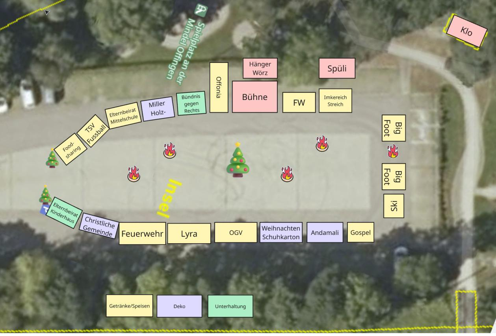

Uhrzeit noch offen
Standflächen einzeichnen
Voraussichtlich Michael Schuster und Michael Olah. Neuer Termin laut Sitzungsniederschrift: 28.11.2026.
Nur für angemeldete Standbetreiber, beteiligte Vereine und ihre Helferteams.
Samstag, 5. Dezember 2026 · Mindelinsel Offingen
Hagenmahdgelände · gepflasterter Parkplatz
Marktbeginn: 16:30 Uhr. Glühwein 3,00 € · Kinderpunsch 2,00 €.
Genaue Zufahrt und Parkmöglichkeiten folgen. Die Aufbauarbeiten abschließen und Fahrzeuge bis zur oben genannten Frist vom Gelände entfernen.
Die besprochene Standaufstellung ist vorläufig. Änderungen durch die abschließende Stromplanung sind möglich. Vorläufigen Lageplan ansehen ↓.
Michael Süß
Vertretung für Michael Olah am Samstag.
Kontaktdaten folgen. Nutzt bis dahin euren bisherigen Kontakt zur Organisation.
Standaufstellung unter Vorbehalt der Stromplanung. Der Plan wurde in der Sitzung besprochen; Änderungen bleiben möglich.

Voraussichtlich Michael Schuster und Michael Olah. Neuer Termin laut Sitzungsniederschrift: 28.11.2026.
Aufbau der Bühne durch den Bauhof; Lieferung der Stände aus Gundremmingen. Der Bauhof stellt Fichtenzweige für die Dekoration bereit.
Aufbau von Ständen bereits möglich – ohne Nachtwache. Eine genaue Uhrzeit ist noch offen.
Aufbau der Stände und morgens der Stromverteiler. Die Stromplanung übernehmen Josef Pickl, Herbert Schinzel, Stefan Griffel und Michael Olah; die Einsatzzeiten werden noch abgestimmt. Die Feuerwehr übernimmt Aufbau und Befeuerung der Feuertonnen.
Ansprechpartner beim Aufbau: Michael Süß als Vertretung für Michael Olah.
Beim Abbau sorgt die Feuerwehr für Beleuchtung. Fahrzeugeinfahrt beim Abbau und späteste Räumung sind noch offen.
Personen, die am Rahmenprogramm teilnehmen, erhalten einen Gutschein. Michael Olah gibt die Marken im Vorfeld aus.
Markenwert für Kinder: 2,00 Euro. Die Marken können an jedem Stand eingelöst werden.
Abrechnung ab 10 Euro Gesamtwert: Gesammelte Marken nach der Veranstaltung im Rathaus einwerfen – mit Kontaktdaten und IBAN des Zielkontos.
Bei weniger als 10 Euro mit anderen Ständen zusammentun: Ein Stand sammelt die Marken, zahlt den anderen den Gegenwert aus und reicht sie gebündelt ein. Einzelne Marken können auch kommentarlos als Spende im Rathaus abgegeben werden.
Glühwein: 3,00 Euro · Kinderpunsch: 2,00 Euro. Die Pfandhöhe legt jeder Stand selbst fest, da eigenes Geschirr verwendet wird.
Bitte besprecht diese Hinweise vor dem Einsatz mit eurem gesamten Helferteam. Die Kurzfassung basiert auf den im Downloadbereich verlinkten Merkblättern des Landratsamts Günzburg und dem bayerischen Leitfaden für ehrenamtliche Helfer.
Für Rückfragen zu Allergenen bitte Zutateninformationen bereithalten. Ob gesetzliche Kennzeichnungspflichten greifen, hängt unter anderem davon ab, ob der Stand als Lebensmittelunternehmen einzustufen ist; bei gelegentlichen ehrenamtlichen Angeboten können Ausnahmen gelten. Hinweise des Bayerischen LGL. Bayerischer Hygiene-Leitfaden.
Bitte besprecht die Regeln vor Marktöffnung mit allen Helferinnen und Helfern. Sie gelten auch für kostenlose Abgaben und beim Einlösen von Gutscheinen.
Rechtsgrundlagen: § 2 JuSchG – Altersnachweis, § 3 – Aushang, § 9 – Alkohol und § 10 – Tabak & E-Zigaretten. Hinweise geprüft am 04.11.2026. Die PDFs werden in der bereitgestellten Fassung angeboten; maßgeblich ist der aktuelle Gesetzestext.
Das Programm startet um 17:00 Uhr mit der Begrüßung durch den 1. Bürgermeister. Musik, Kinderauftritte und Nikolaus folgen. Anschließend ist Hintergrundmusik über die Lautsprecheranlage vorgesehen.
| Uhrzeit | Programmpunkt |
|---|---|
| 17:00 Uhr | Begrüßung durch den Ersten Bürgermeister |
| 17:05 Uhr | Kinderhaus Glücksstern Offingen |
| 17:30 Uhr | Chor-AG der Grundschule |
| 17:40 Uhr | Tanz-AG der Grundschule |
| 18:00 Uhr | Anne Höb mit ihren Musikschülern |
| 18:15 Uhr | Nikolaus und Knecht Ruprecht mit Bescherung |
| 18:30 Uhr | Musikschule unter Leitung von Klaus Schlander |
| 19:15 Uhr | Musikverein LYRA Offingen |
| 22:00 Uhr | Ende des Weihnachtsmarktes |
Änderungen im Programmablauf vorbehalten.
46 Angebote in drei Kategorien. Fehlende Preise sind als „Preis offen“ gekennzeichnet.
| Angebot | Preis | Anbieter | Preisunterschiede & Hinweise |
|---|---|---|---|
| Apfelpunsch | 2,50 € | TSV Offingen Abteilung Ski | |
| Apfelpunsch mit Amaretto | 3,50 € | TSV Offingen Abteilung Ski | |
| Bier | 3,00 € | BigFoot Club | |
| Bombardino | 3,50 € | Offingen steht für Demokratie, Toleranz und gesellschaftlichen Zusammenhalt | |
| Bratapfellikör | 2,00 € | TSV Offingen Abteilung Ski | |
| Eierpunsch | 2,50 € | Musikverein Lyra Offingen e. V. | |
| Feuerzangenbowle | 6,00 € | BigFoot Club | |
| Glühmost | 3,00 € | Obst- und Gartenbauverein | |
| Glühwein | 3,00 € | Freie Wähler Offingen; Jugendfeuerwehr Offingen; Offonia | |
| Heißer Aperol | 4,00 € | TSV Offingen Abteilung Ski | |
| Imkerei-Met | 4,00 € | Imkerei Streich | Zusätzlich 3,50 € Pfand laut bisheriger Anmeldung; in der neuen Tabelle nicht erneut angegeben. |
| Imkerei-Met mit Schuss (40 %) | 5,00 € | Imkerei Streich | Zusätzlich 3,50 € Pfand laut bisheriger Anmeldung; in der neuen Tabelle nicht erneut angegeben. |
| Imkerei-Punsch | 3,50 € | Imkerei Streich | Zusätzlich 3,50 € Pfand laut bisheriger Anmeldung; in der neuen Tabelle nicht erneut angegeben. |
| Kinderpunsch | 2,00 € | Obst- und Gartenbauverein; Freie Wähler Offingen; Grund- und Mittelschule Offingen; Jugendfeuerwehr Offingen; Offonia | Einheitspreis laut Sitzungsbeschluss; ersetzt die abweichenden älteren Preisangaben in der Anlage. |
| Schnaps | 2,00 € | Freie Wähler Offingen | |
| Weißer Glühwein | 3,00 € | TSV Offingen Abteilung Ski | |
| Weißer Glühwein, Kinderpunsch, Wein | Glühwein 3,00 €; Kinderpunsch 2,00 €; Wein: Preis offen | Gospel & joy | Glühwein und Kinderpunsch gemäß vereinbarten Einheitspreisen; Weinpreis noch offen. |
| Wilhelmine | 2,00 € | Obst- und Gartenbauverein |
| Angebot | Preis | Anbieter | Preisunterschiede & Hinweise |
|---|---|---|---|
| Bierstangen (verschiedene Sorten) | 2,50 € | Musikverein Lyra Offingen e. V. | |
| Crepes Marmelade | 3,00 € | Grund- und Mittelschule Offingen | |
| Crepes Nutella | 3,50 € | TSV Offingen Abteilung Ski; Grund- und Mittelschule Offingen | |
| Crepes pikant | 4,00 € | Grund- und Mittelschule Offingen | |
| Crepes Zimt-Zucker | 2,50 – 3,00 € | TSV Offingen Abteilung Ski; Grund- und Mittelschule Offingen | TSV Offingen Abteilung Ski: 2,50 €; Grund- und Mittelschule Offingen: 3,00 € |
| Engelslocken | 3,00 € | Offonia | |
| Feuerwurst | 6,00 € | BigFoot Club | |
| Flammkuchen | Preis offen | Jugendfeuerwehr Offingen | |
| Nürnberger im Semmel | 3,00 € | Freie Wähler Offingen | |
| Rote im Semmel | 4,50 € | Offonia | |
| Schmalz-/Käsebrot | 1,50 € | Obst- und Gartenbauverein | |
| Schnitzelsemmel (evtl.) | 5,00 € | Gospel & joy | |
| Schupfnudeln | 5,00 € | Offonia | |
| Verschiedene Lebensmittel | kostenlos | foodsharing |
| Angebot | Preis | Anbieter | Preisunterschiede & Hinweise |
|---|---|---|---|
| Basteln / Kinderschminken | 2,00 € | Elternbeirat Kinderhaus Glückssterne Offingen | |
| Blütenhonig cremig 250 g | 4,50 € | Imkerei Streich | |
| Blütenhonig cremig 500 g | 7,00 € | Imkerei Streich | |
| Bücher, Kalender, kleine Geschenke | 5,00 – 30,00 € | Christliche Gemeinde Günzburg e.v. | |
| Dekogegenstände und kleine Geschenke (gegossene Sachen aus Keramikgießpulver, Krippen mit Figuren, Engel u. a.) | 1,00 – 15,00 € | Andamali - Schönes handgemacht | |
| Honig mit Kurkuma 250 g | 7,00 € | Imkerei Streich | |
| Honig mit Vanille 250 g | 7,00 € | Imkerei Streich | |
| Honig mit Zimt 250 g | 7,00 € | Imkerei Streich | |
| Kalender (Verteilung) | kostenlos | Christliche Gemeinde Günzburg e.v. | |
| Kerzen | Preis offen | Imkerei Streich | |
| Lippenbalsam, Creme, Schläfenstift | 3,50 € | Imkerei Streich | |
| Wald- und Wiesenhonig 250 g | 4,50 € | Imkerei Streich | |
| Wald- und Wiesenhonig 500 g | 7,00 € | Imkerei Streich | |
| Weihnachtliche Holzartikel (diverse) | 3,00 – 19,00 € | Lisa Miller |
Angebote gemäß Anlage zur Sitzung vom 05.11.2026. Bei Glühwein und Kinderpunsch gelten die im Protokoll vereinbarten Einheitspreise; sie ersetzen abweichende ältere Angaben in der Anlage.
Bitte nutzt euren bisherigen Kontakt zur Organisation. Ein zentraler Kontakt für Standbetreiber wird ergänzt.
Michael Süß vertritt Michael Olah. Kontaktdaten sowie Ansprechpartner für Technik und laufenden Betrieb folgen.
Die Feuerwehr übernimmt den Sanitätsdienst und stellt Feuerlöscher für die Veranstaltung bereit. Der genaue Anlaufpunkt wird noch ergänzt.
Programmflyer als JPG herunterladen
Programmflyer als PDF herunterladen
Der Weihnachtsmarkt beginnt um 16:30 Uhr.